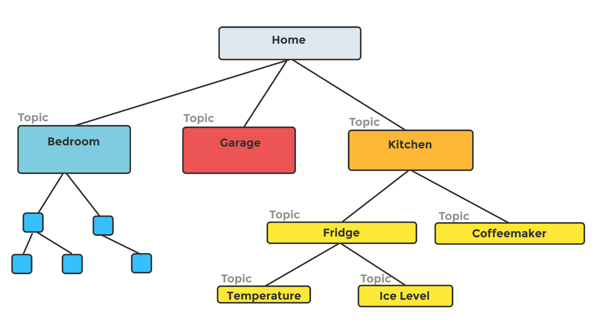

The MQTTSuite project is a lightweight MQTT integration system and consist of three applications MQTTBroker, MQTTIntegrator and MQTTBridge powered by SNode.C, a single threaded, single tasking framework for networking applications written entirely in C++. Due to it's little resource usage it is especially usable on resource limited systems.
- MQTTBroker: Is a full featured MQTT broker utilizing version 3.1.1 of the MQTT protocol standard. It accepts encrypted and unencrypted incoming plain and WebSockets MQTT connections. In addition it provides a rudimentary Web-Interface showing all currently connected MQTT-clients.
- MQTTIntegrator: Is a IoT integration application controlled by a JSON-mapping description. It connects via SSL/TLS to an MQTT-broker.
- MQTTBridge: Is a purely client side bridge. It can establish multiple bridges each connecting to multiple mqtt brokers and bridges configurable topics among them.
Table of Content
- Table of Content
- License
- Copyright
- Installation
- MQTTSuite Usage Guide
License
SNode.C is dual-licensed under MIT and GPL-3.0 (or any later version). You can choose between one of them if you use this work.
SPDX-License-Identifier: MIT OR GPL-3.0-or-later
Copyright
Volker Christian (me@vchrist.at or Volker.Christian@fh-hagenberg.at)
Installation
The installation of the MQTTSuite is straight forward:
- In a first step the network framework SNode.C needs to be installed
- In a second step all neccessary tools and libraries are installed.
- Afterwards the MQTTSuite can be cloned, compiled and installed.
Supported Systems and Hardware
The main development of MQTTSuite takes place on a Debian Sid style Linux system. Since Debian Bookworm it compiles also on Debian stable. Though, it should compile cleanly on every Linux system provided that all required tools and libraries are installed.
MQTTSuite is known to compile and run successful on
- x86-64 architecture
- Arm architecture (32 and 64 bit) tested on
- Raspberry Pi 3, 4 and 5
- OpenWrt 23.05.0 and later
- All architectures
- Android via Termux
- Documentation in preparation
Minimum required Compiler Versions
The most version-critical dependencies are the C++ compilers.
Either GCC or clang can be used but they need to be of an up to date version because SNode.C uses some new C++20 features internally.
- GCC 12.2 and later
- Clang 13.0 and later
Requirements and Dependencies
MQTTSuite requires some external tools and depends on a view external libraries. Some of these libraries are directly included in the MQTTSuite.
Tools
Mandatory
- git (https://git-scm.com/)
- cmake (https://cmake.org/)
- make (https://www.gnu.org/software/make/) or
- ninja (https://ninja-build.org/)
- g++ (https://gcc.gnu.org/) or
- clang (https://clang.llvm.org/)
- pkg-config (https://www.freedesktop.org/wiki/Software/pkg-config/)
Optional
- iwyu (https://include-what-you-use.org/)
- clang-format (https://clang.llvm.org/docs/ClangFormat.html)
- cmake-format (https://cmake-format.readthedocs.io/)
- doxygen (https://www.doxygen.nl/)
Frameworks
Mandatory
- SNode.C: Simple NODE in C++ (https://github.com/SNodeC/snode.c)
Libraries
Mandatory
- libfmt (11.0.0 or later) development files (https://github.com/fmtlib/fmt)
Bundled
This libraries are already integrated directly in the MQTTSuite. Thus they need not be installed by hand
- JSON Schema Validator for Modern C++ (https://github.com/pboettch/json-schema-validator)
- inja: A Template Engine for Modern C++ (https://github.com/pantor/inja)
Installation on Debian Style Systems (x86-64, Arm)
Requirements and Dependencies
To install all dependencies on Debian style system
- install SNode.C (https://github.com/SNodeC/snode.c?tab=readme-ov-file#installation)
and than just run
sudo apt updatesudo apt install libfmt-dev
MQTTSuite
After installing all dependencies MQTTSuite can be cloned from github, compiled and installed.
It is a good idea to utilize all processor cores and threads for compilation. Thus e.g. on a Raspberry Pi append -j5 to the make or ninja command.
Deploment on OpenWRT
As a starting point, it is assumed that local ssh and sftp access to the router exist and that the router is connected to the Internet via the WAN port.
Note: You do not need to deploy SNode.C by hand as this framework is pulled in by the following procedure automatically.
Deploying SNode.C on an OpenWRT router involves a view tasks:
- Choose and download an OpenWRT-SDK
- Patch the SDK to integrate the SNode.C feed
- Install the MQTTSuite package and its dependencies
- Configure the SDK
- Cross compile MQTTSuite
- Deploy MQTTSuite
MQTTSuite needs to be cross compiled on a Linux host system to be deployable on OpenWRT. Don't be afraid about cross compiling it is strait forward.
Choose and Download a SDK
First, download and extract a SDK-package of version 23.05.0-rc1 or later from the OpenWRT download page into an arbitrary directory <DIR>.
For example to download and use the SDK version 23.05.0-rc1 for the Netgear MR8300 Wireless Router (soc: IPQ4019) run
to create the SDK directory openwrt-sdk-<version>-<architecture>-<atype>_<compiler>-<cverstion>_<libc>_<abi>.Linux-x86_64 what from now on is referred as <SDK_DIR>.
In this example the values of the placeholder are:
- <version> = 23.05.0-rc2
- <architecture> = ipq40xx_
- <atype> = generic
- <compiler> = gcc
- <cverstion> = 12.3.0
- <libc> = musl
- <abi> = eabi
Patch the SDK to Integrate the MQTTSuite Feed
Second step is to patch the default OpenWRT package feeds to add the SNode.C feed (MQTTSuite is provided by this feed) by executing
Install the MQTTSuite Package and its Dependencies
In the third step, all source packages required to compile SNode.C are installed.
Configure the SDK
The SDK is configured in the fourth step.
Default values for all configuration options can be used safely.
Nevertheless, to customize the configuration of the base framework SNode.C run
and navigate to Network -> SNode.C.
Cross Compile MQTTSuite
In the last step, MQTTSuite is cross-compiled.
The two steps, Install Packages, and Cross Compile (at most the last one) take some time as
- all feed and package definitions necessary to cross compile MQTTSuite are downloaded and installed locally from the OpenWRT servers and from github,
- the sources of all dependent and indirect dependent packages are downloaded from upstream and build recursively and
- MQTTSuite is cloned from github and cross compiled.
To parallelize the compilation use the switch -j<thread-count> of make or ninja where <thread-count> is the number of CPU-threads dedicated to cross compile SNode.C and its dependencies.
Note: For MQTTBroker and all it's build dependencies the created ipk-packages can be found in the directory <SDK_DIR>bin/packages/\<architecture\>.
Deploy MQTTSuite
After cross compilation, MQTTSuite can be deployed.
The mqttsuite_<version>_<architecture>.ipk and snode.c-*_<version>_<architecture>.ipk packages must be downloaded to and installed on the router by executing
on the router. Use the option --force-reinstall in cast you want to reinstall the same version by overwriting the currently installed files.
Note: On first install of MQTTSuite and SNode.C you will for sure get errors about missing dependent packages from the primary OpenWRT package repository. Just install them as usual using opkg and than go on to install MQTTSuite and SNode.C again.
During package installation a new unix group with member root is created, used for the group management of config-, log-, and pid-files.
Note: A logout/login is necessary to activate the new group assignment.
MQTTSuite Usage Guide
MQTTBroker
Connection Options
The MQTTBroker supports multiple connection methods across various protocols. Additional connection protocols e.g. Bluetooth can be easily added in the mqttbroker.cpp source code.
All aspects like port numbers, sun paths etc. can be configured using the SNode.C configuration system either in-code, on the command line or via a configuration file.
In case an encrypted access is required suitable certificates needs to be provided also.
Note: A session store needs to be configured in case the current sessions shall be made persistent in case the MQTTBroker is stopped by using the command line option --mqtt-session-store <path-to-session-store-file>.
Note: In case the MQTTBroker should also act as an integrated MQTTIntegrator a mapping description file needs to be provided via the command line option --mqtt-mapping-file <path-to-mqtt-mapping-file.json>.
Note: The path to the HTML templates for the MQTTBroker Web Interface can be configured by providing the command line option --html-dir <dir-of-html-templates>. The default directory /var/www/mqttsuite/mqttbroker is already configured in mqttbroker.cpp.
Note: All three options can be made persistent by storing their values in a configuration file by appending the switch --write-config or -w on the command line.
MQTT over TCP/IP
MQTT clients can connect via IPv4 and IPv6 using both encrypted and unencrypted channels.
| Protocol | Encryption | Local Port | Instance |
|---|---|---|---|
| IPv4 | No | 1883 | in-mqtt |
| IPv4 | Yes | 8883 | in-mqtts |
| IPv6 | No | 1883 | in6-mqtt |
| IPv6 | Yes | 8883 | in6-mqtts |
MQTT over Unix Domain Sockets
For local communication, the broker also supports Unix domain sockets.
| Encryption | Local Sun Path | Instance |
|---|---|---|
| No | /tmp/mqttbroker-un-mqtt | un-mqtt |
| Yes | /tmp/mqttbroker-un-mqtts | un-mqtts |
MQTT over WebSockets
Clients can connect via WebSockets using both IPv4 and IPv6.
| Protocol | Encryption | Local Port | Request Target | Sec-WebSocket-Protocol | Instance |
|---|---|---|---|---|---|
| IPv4 | No | 8080 | / or /ws | mqtt | in-http |
| IPv4 | Yes | 8088 | / or /ws | mqtt | in-https |
| IPv6 | No | 8080 | / or /ws | mqtt | in6-http |
| IPv6 | Yes | 8088 | / or /ws | mqtt | in6-https |
Web Interface
The MQTTBroker Web Interface provides real-time visibility into active client connections.
| Protocol | Encryption | Local Port | Request Target | Instance |
|---|---|---|---|---|
| IPv4 | No | 8080 | / or /clients | in-http |
| IPv4 | Yes | 8088 | / or /clients | in-https |
| IPv6 | No | 8080 | / or /clients | in6-http |
| IPv6 | Yes | 8088 | / or /clients | in6-https |
MQTTIntegrator
Connection Options
The MQTTBroker supports multiple connection methods across various protocols. Additional connection protocols e.g. Bluetooth can be easily added in the mqttintegrator.cppsource code.
All aspects like port numbers, sun paths etc. can be configured using the SNode.C configuration system either in-code, on the command line or via a configuration file.
In case an encrypted access is required suitable certificates needs to be provided also.
Note: A session store needs to be configured in case the current sessions shall be made persistent in case the MQTTIntegrator is stopped by using the command line option --mqtt-session-store <path-to-session-store-file>.
Note: A mapping description file needs to be provided via the command line option --mqtt-mapping-file <path-to-mqtt-mapping-file.json>. This JSON file is used to provide the IoT logic by mapping mqtt messages received from a mqtt broker to outgoing mqtt messages. The translation of topics and messages are described by that file.
Note: Both options can be made persistent by storing their values in a configuration file by appending the switch --write-config or -w on the command line.
MQTT over TCP/IP
| Protocol | Encryption | Remote Port | Instance |
|---|---|---|---|
| IPv4 | No | 1883 | in-mqtt |
| IPv4 | Yes | 8883 | in-mqtts |
| IPv6 | No | 1883 | in6-mqtt |
| IPv6 | Yes | 8883 | in6-mqtts |
MQTT over Unix Domain Sockets
| Encryption | Remote Sun Path | Instance |
|---|---|---|
| No | /tmp/mqttbroker-un-mqtt | un-mqtt |
| Yes | /tmp/mqttbroker-un-mqtts | un-mqtts |
MQTT over WebSockets
| Protocol | Encryption | Remote Port | Requested Target | Sec-WebSocket-Protocol | Instance |
|---|---|---|---|---|---|
| IPv4 | No | 8080 | /ws | mqtt | in-wsmqtt |
| IPv4 | Yes | 8088 | /ws | mqtt | in-wsmqtts |
| IPv6 | No | 8080 | /ws | mqtt | in6-wsmqtt |
| IPv6 | Yes | 8088 | /ws | mqtt | in6-wsmqtts |
Note: All instances are active after installation.
Note: To inactivate (disable) instances selectively as they are not needed for communication the command line switch --disabled must be used on that instances.
MQTT Mapping Description
The logic of an IoT application is described by a JSON mapping description file. This file describes the translation of topics and messages of incoming mqtt messages from a mqtt broker. The translated topics and messages are send back to the broker.
The JSON structure of that file (example) needs to fulfill a well defined JSON schema definition.
The Structure of the JSON Mapping Description
The big Structure of the JSON mapping description consists of three objects:
discover_prefix: The prefix topic-level of the discover topics of an application (currently not used).connection: This object describes options for the MQTT connection.mapping: This object describes the mappings of incoming topics|messages to outgoing topics/messages.
Topic Levels and the JSON-Structure of the <tt>mapping</tt> Section
- A
topic_levelis either- an object describing one topic or
- an array of objects describing multiple sibling topics
topic_levels can be recursively nested to create atopic_leveltree.
Single Topic Level
Nested Topic Levels
Sibling and Nested Topic Levels
A More Complex Topic Level Structure

The <tt>subscription</tt> Object of a Topic Level
The topic_level object can contain a subscription object, which forces the MQTTIntegrator to subscribes for this topic. This subscription object describes concrete topic to topic and message to message mappings.
Three different kinds of <mapping-section> exist:
- Static mapping is thought for a string-matching mapping of incoming messages to outgoing one.
- Value mapping is used if the incoming message should be interpreted as a value. The actual mapping is done controlled by an inja template, whereas the message is accessible via the template variable
message. - JSON mapping can be used in case the incoming message is a JSON object. The \alert{actual mapping} is done controlled by an inja template. The JSON objects are accessible in the template as elements of the template JSON variable
message.
Static Mapping
The static mapping section describes the mapped topic and the message mapping where the incoming message is string-matched to string-values specified in the message_mappings array section.
Value Mapping
The value mapping section describes the mapped topic and the message mapping where the incoming message is available in the variable message and is interpreted as value of an inja template.
JSON Mapping
The json mapping section can be used in case the incoming message is a JSON object. The actual mapping is controlled by an inja template. The JSON object is accessible in the template as elements of the template JSON variable message.
E.g. the JSON message
is rendered by the above mapping_template as 5 to 11pm.